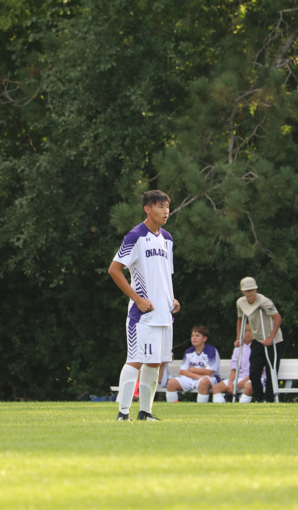
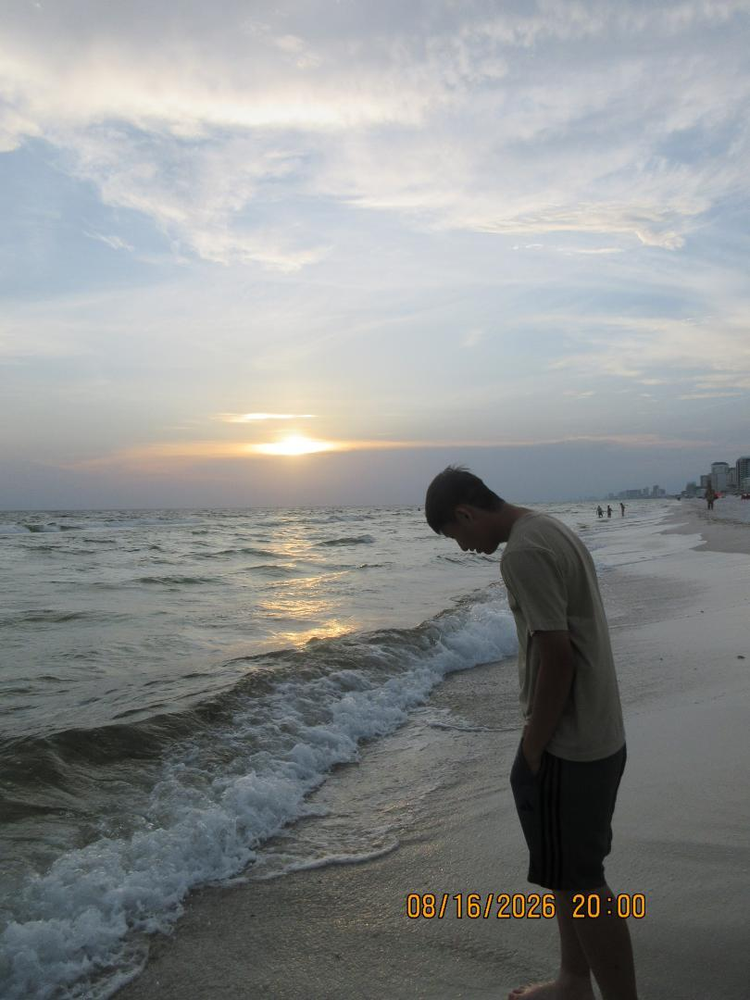
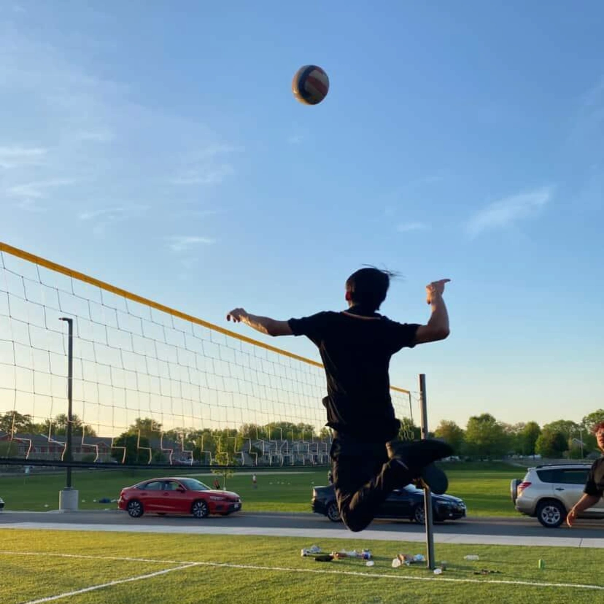

Sports and travel give me a chance to stay active, try new things, and make good memories.
I enjoy playing sports and exploring new places. I don't play video games as much as I used to because I spend more of my free time on sports these days.

Soccer
I enjoyed playing soccer during my senior year of high school. I considered playing in college, but decided to focus on my studies first. I may return to the sport in the future.

Traveling
Before college started, I spent a week in Florida at a beach house. I enjoyed the warm weather and the chance to explore a new place.

Volleyball
I started playing volleyball in my junior year and often play in Hmong tournaments. It's one of my favorite sports, and I hope to join a team in the future.Back to home